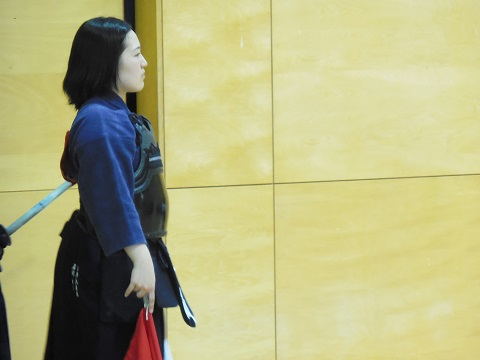
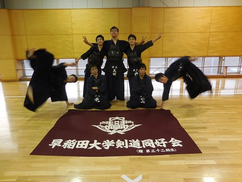

|
６月２８日 早慶戦 いざ試合 観戦なう。カメラ目線篠崎（２年） 女子はさっさか進んで一軍戦 先鋒戦 初主審だったらしい柴田。なんか和んだ。 男女同時進行でやってたので、こちらは男子２軍戦 こっちにも注目してね とかやってたらいつの間にか女子１軍戦終わってた件 女子が終わった試合場で男子１軍戦。そういやたすきの名称が「目印」に変わったって柴田さんがこの前どや顔で言ってた。 藤本のファンサ精神な… というわけで男子１軍戦 がんばれ長山たん ちなみに同時進行で男子２軍戦やってます 
あっちこっち撮って忙しいお （試合後）うぇーい  というわけで男子１軍に集中…と見せかけ審判なうの石川を撮る← 先輩方も応援ありがとうございました！ 惜しくも敗退 集合写真 
わちゃわちゃ 
女子３軍 女子２軍￥ 女子１軍 早稲田全体 ご恒例一発（？）芸。阿部くんと前田くんが体張ってた（そのまんまの意味） 男子３軍  男子２軍 ※木原くんは後日膝の痛みを訴えてました 男子１軍 前期の試合も残すところ１つとなりました！悔いのない試合にしましょう！ (※写真へのコメントは全て管理人がしております。) |